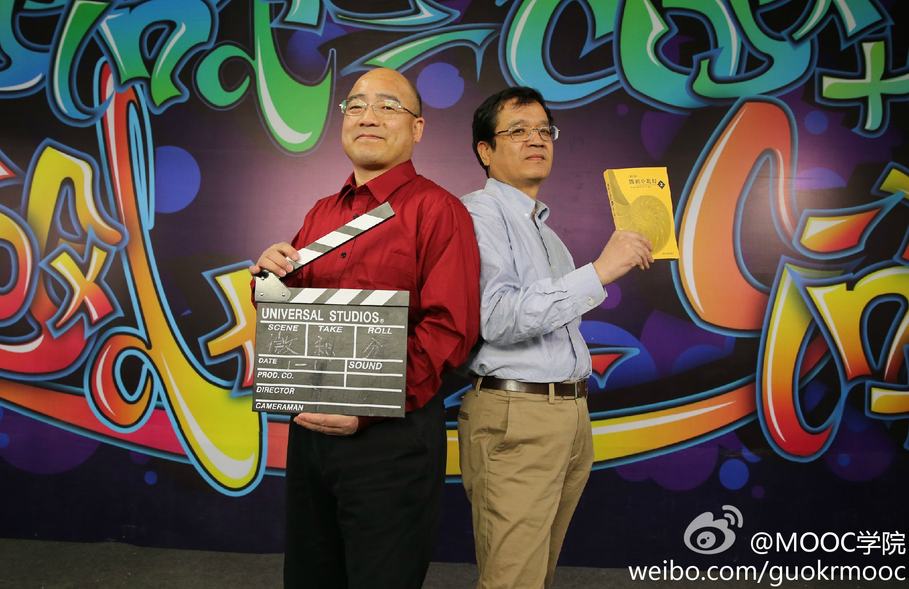

哇，章纪民！ //@LeeThree9:哇，章老师微积分讲得特别好，可惜我学得太烂…… //@剑心-李军:赞一沓作业纸//@LeeHM: 章纪民！找他答疑回答得那个NICE!//@Huper9: 我靠！章纪民！上他的多元微积分的时候一次作业可以写一沓作业纸……//@phx9_焱: nb！ //@松鼠九号:赞！//@教主Sophie:章纪民！@mooc-mooc:【理工科福利：清华大学微积分课程】微积分作业做不出来？老师讲课太快？来补课吧！@清华MOOCs 推出微积分课程，由扈志明、章纪民两位老师主讲，4月8日开课：微积分B(1) #MOOC新课# 话说，似乎期中考快到了？ 